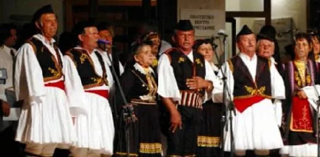

Μερικές φορές αρκούν οι πρώτες νότες για να αλλάξει ο τρόπος που στεκόμαστε. Κάποιος αναγνωρίζει έναν σκοπό, κάποιος ψάχνει το χέρι του διπλανού, κάποιος θυμάται έναν άνθρωπο που χόρευε πάντα πρώτος. Η μουσική της Ηπείρου γίνεται πιο κατανοητή όταν την ακούμε μαζί με τις περιστάσεις και τις κοινότητες που της δίνουν ζωή.
Μια φωνή μέσα σε πολλές
Στο ηπειρώτικο πολυφωνικό τραγούδι οι τραγουδιστές αναλαμβάνουν διαφορετικούς ρόλους. Τα θέματα αγγίζουν τον γάμο, τον θάνατο, την παιδική ηλικία και την ποιμενική ζωή. Η μετανάστευση μετά τον πόλεμο και τον εμφύλιο περιόρισε τη μετάδοσή του στα χωριά. Το Πολυφωνικό Καραβάνι συνέδεσε καταγραφές, συναντήσεις και μαθητεία, και το 2020 επιλέχθηκε από την UNESCO ως καλή πρακτική διαφύλαξης.[1]
Για τον ακροατή, η πρώτη ανακάλυψη είναι απλή: η κάθε φωνή χρειάζεται τις υπόλοιπες. Η συγκίνηση γεννιέται και από αυτή τη σχέση. Ακούς έναν άνθρωπο, αλλά αισθάνεσαι την παρουσία της ομάδας.

Ο χορός έχει τόπο και όνομα
Ο πωγωνίσιος συνδέεται με την επαρχία Πωγωνίου. Στο αρχείο της Δόμνας Σαμίου σώζεται οργανική εκτέλεση με τον Φίλιππο Ρούντα στο κλαρίνο, ηχογραφημένη το 1961. Η καταγραφή αναφέρει τετράσημο ρυθμό και διασώζει μαζί με τον σκοπό το όνομα του μουσικού και τον χρόνο της εκτέλεσης.[2]
Αυτά τα στοιχεία βοηθούν να ακούμε συγκεκριμένους ανθρώπους, πέρα από τη γενική ετικέτα «παραδοσιακό». Μια ηχογράφηση έχει τη δική της άρθρωση και αναπνοή. Η αναζήτηση διαφορετικών εκτελέσεων του ίδιου χορού μπορεί να γίνει ένας μικρός τρόπος γνωριμίας με το μουσικό ύφος.
Η ξενιτιά γίνεται τραγούδι
Το «Γιάννη μου το μαντίλι σου», στην ηχογράφηση του 1989 με τον Σάββα Σιάτρα, κατατάσσεται στα τραγούδια της ξενιτιάς. Τον συνοδεύουν κλαρίνο, βιολί, λαούτο και ντέφι. Η τεκμηρίωση διατηρεί και τους συντελεστές της κομπανίας, δείχνοντας πόσοι άνθρωποι συνεργάζονται για έναν ήχο που συχνά τον θυμόμαστε ως ενιαίο.[3]
Όταν ένα τέτοιο τραγούδι αγγίζει μια οικογένεια, η ακρόαση μπορεί να συνδέεται με πραγματικές αναχωρήσεις. Δεν χρειάζεται να γνωρίζουν όλοι την ίδια ιστορία για να βρεθούν κοντά. Ο καθένας φέρνει τη δική του μνήμη στο κοινό άκουσμα.
Η μουσική επιστρέφει στην πλατεία
Στο πανηγύρι του Συρράκου, ο χορός συνοδεύεται από μουσικούς και τραγουδιστές. Η γιορτή συνδέει και τους κατοίκους που έχουν μετακινηθεί στις πόλεις με την κοινότητά τους. Το συγκεκριμένο πανηγύρι εντάχθηκε το 2022 στην UNESCO μαζί με τον Τρανό Χορό της Βλάστης.[4]
Για να πλησιάσουμε αυτή τη μουσική, μπορούμε να αρχίσουμε ακούγοντας προσεκτικά ένα τραγούδι ολόκληρο. Έπειτα να μάθουμε ποιος παίζει, από πού προέρχεται ο σκοπός και σε ποια περίσταση ακουγόταν. Στην πλατεία, η ίδια προσοχή γίνεται σεβασμός στους μουσικούς και στους ανθρώπους του χορού.
Ένας ήχος βαρύς και λυπητερός
Οι μελωδικές γραμμές της ηπειρώτικης μουσικής είναι συνήθως σύντομες και ο ήχος της έχει λυπητερό χρώμα. Ακόμη και τα τραγούδια με εύθυμο σκοπό ή σατιρικό περιεχόμενο ακούγονται «βαριά». Η λιτότητα του ορεινού τοπίου φαίνεται να αντανακλάται σε αυτόν τον ήχο, ακόμη και όταν ο μουσικός δημιουργεί τα χαρακτηριστικά στολίδια και τσακίσματα της μελωδίας.
Ο ρυθμός είναι πιο αργός απ’ ό,τι στην υπόλοιπη Ελλάδα, είτε πρόκειται για μοιρολόι, είτε για τραγούδι της τάβλας, είτε για χορευτικό σκοπό: αποδίδεται βαριά και μακρόσυρτα.
Η ηπειρώτικη κομπανία
Το κλαρίνο δίνει συχνά τη μελωδική κατεύθυνση, ενώ το βιολί συνομιλεί μαζί του. Το λαούτο στηρίζει αρμονικά και ρυθμικά το σύνολο και το ντέφι τονίζει τον παλμό. Η φλογέρα συνδέεται με μια παλαιότερη ποιμενική μουσική πρακτική. Ο ρόλος κάθε οργάνου γίνεται κατανοητός μέσα στο σύνολο και στην περίσταση της εκτέλεσης.
- Φλογέρα
- Ένα από τα κύρια ηπειρώτικα όργανα, διαδεδομένο σε όλη την Ελλάδα. Συνήθως φτιάχνεται από καλάμι με πέντε έως επτά τρύπες. Επειδή την κατασκευάζει ο ίδιος ο οργανοπαίκτης, οι αποστάσεις των οπών ακολουθούν τα δάχτυλά του και το όργανο δεν ταυτίζεται πλήρως με το σύστημα των τόνων και των ημιτονίων.
- Κλαρίνο
- Διάδοχος της φλογέρας στη μελωδική πρωτοκαθεδρία. Είναι πιο απλό από το κλαρίνο της συμφωνικής ορχήστρας, με λιγότερα κλειδιά και αρκετές τρύπες ακάλυπτες.
- Βιολί
- Συμπληρώνει το κλαρίνο και «γεμίζει» τα κενά. Παίζει επαναλαμβανόμενα ρυθμικά μοτίβα, δημιουργώντας ένα αρμονικό φάσμα μέσα στο οποίο κινείται το κλαρίνο.
- Λαούτο
- Το πολυφωνικό όργανο της κομπανίας, με κυρίως συνοδευτικό ρόλο. Ξεχωρίζει συχνά στις οργανικές εισαγωγές και ακόμη συχνότερα στον αυτοσχεδιασμό. Το ηπειρώτικο λαούτο έχει τέσσερις διπλές χορδές, κουρδισμένες ανά δύο, και παίζεται με πένα ή φτερό.
- Ντέφι
- Έχει ρυθμικό ρόλο, πάντα λιτό και συντηρητικό. Δεν αυτοσχεδιάζει· υπογραμμίζει τα χορευτικά βήματα εναλλάσσοντας έναν βαρύ ήχο (θέση) με έναν οξύ (άρση), και δίνει έτσι στη μουσική το γνωστό αργόσυρτο ύφος.
Όλα αυτά αφορούν τη μονοφωνική μουσική, όπου την εκτέλεση του σκοπού αναλαμβάνει ένα όργανο, ενώ τα υπόλοιπα συνοδεύουν. Δίπλα της υπάρχει η πολυφωνία, στα βόρεια της Ηπείρου και στη Βόρεια Ήπειρο, όπου σπάνια υπάρχει οργανική συνοδεία.
Τραγούδια για τις στιγμές της ζωής
Το ρεπερτόριο περιλαμβάνει ιστορικά τραγούδια, τραγούδια γάμου, ξενιτιάς και καθημερινής ζωής, κάλαντα και μοιρολόγια. Το μοιρολόι μπορεί να ακουστεί και στην αρχή ενός πανηγυριού, συνδέοντας τη συνάντηση με τη μνήμη όσων απουσιάζουν.
Με βάση το περιεχόμενό τους, τα δημοτικά τραγούδια συνήθως διακρίνονται σε κατηγορίες:
- Ακριτικά
- Αναφέρονται στους ακρίτες, τους φύλακες των συνόρων της βυζαντινής αυτοκρατορίας (8ος–12ος αιώνας).
- Παραλλαγές
- Μεσαιωνικά τραγούδια, κυρίως δραματικού περιεχομένου, με έντονο στοιχείο παραμυθιού. Συγγενεύουν με τα ακριτικά και είναι, όπως εκείνα, πολύστιχα.
- Ιστορικά
- Αφηγούνται γεγονότα της μακραίωνης ελληνικής ιστορίας.
- Κλέφτικα
- Εξυμνούν τα κατορθώματα των κλεφτών και των αρματολών την περίοδο της Τουρκοκρατίας.
- Του καθημερινού βίου
- Εργατικά, ποιμενικά, τραγούδια του έρωτα και του γάμου.
- Μοιρολόγια
- Αναφέρονται στον θάνατο οικείων προσώπων, στα τραγούδια του Χάρου και του κάτω κόσμου, αλλά και στον πόνο της απώλειας και της ξενιτιάς.
- Κάλαντα
- Τα θρησκευτικά τραγούδια των Χριστουγέννων, της Πρωτοχρονιάς, των Θεοφανίων, του Λαζάρου, της Μεγάλης Παρασκευής και του Πάσχα.
Ο κύκλος και το τοπικό ύφος
Οι χοροί στα δύο και στα τρία, οι ζαγορίσιοι, οι συγκαθιστοί, το Μπεράτι και το Φυσούνι ανήκουν στο ευρύτερο μουσικοχορευτικό τοπίο. Η ονομασία ενός χορού μπορεί να παραπέμπει σε τόπο, τραγούδι, λαβή ή αντικείμενο, όπως το μαντήλι. Η κοινή ονομασία δεν σημαίνει ταυτόσημο βήμα και ύφος σε κάθε κοινότητα. Ακόμη και οι απλοί χοροί στα τρία ή στα δύο χορεύονται διαφορετικά από περιοχή σε περιοχή, και η μορφολογία του εδάφους φαίνεται να παίζει ρόλο στη διαμόρφωση του ύφους.
Οι περισσότεροι χοροί της Ηπείρου είναι κυκλικοί, με κίνηση αργή, δυναμική και μεγαλοπρεπή, ευθυτενή κορμοστασιά και βαρύ περπάτημα. Τα βήματα μπορεί να είναι απλά· το ύφος είναι αυτό που δύσκολα αποδίδεται, ιδιαίτερα από όσους δεν το έχουν ζήσει από μέσα. Στους ανδρικούς χορούς κυριαρχούν το βαρύ και σταθερό βήμα, τα καθίσματα και τα χτυπήματα· οι γυναικείοι χοροί προβάλλουν με τον δικό τους τρόπο τον δυναμισμό των γυναικών.
Ο ανοιχτός κύκλος και το διπλοκάγκελο αποτελούν μορφές συλλογικής συμμετοχής: όλοι οι κάτοικοι του χωριού, πιασμένοι χέρι με χέρι, εκφράζουν και ενισχύουν την ενότητα της κοινότητας. Η παλαιότερη σειρά των χορευτών συνδεόταν και με ηλικιακές ή κοινωνικές συμβάσεις, οι οποίες πρέπει να διαβάζονται στο ιστορικό τους πλαίσιο.
Σύμφωνα με τις καταγραφές, μπροστά στον κύκλο έπιαναν συνήθως οι γεροντότεροι, ακολουθούσαν οι παντρεμένοι, οι νεότεροι και τέλος τα παιδιά· σε πολλά χωριά το χορό άνοιγαν οι ιερείς και οι προύχοντες, με εξαιρέσεις όπως το Συρράκο, όπου οι ιερείς δεν χόρευαν. Η διάταξη μπορούσε να έχει τους άνδρες στον πίσω κύκλο και τις γυναίκες στον εσωτερικό, ή τους άνδρες μπροστά σε μία γραμμή με τις γυναίκες να ακολουθούν, ή διπλό κύκλο με τις γυναίκες απ’ έξω. Η μικτή διάταξη, με τις γυναίκες ανάμεσα στους άνδρες, είναι μεταγενέστερη, των τελευταίων δεκαετιών· μόνο στο Ζαγόρι επιτρεπόταν παλαιότερα η ανάμειξη, κάτι που συνδέεται με το υψηλότερο μορφωτικό και οικονομικό επίπεδο του τόπου. Συνηθισμένες λαβές είναι από τις παλάμες, με λυγισμένους αγκώνες ή τεντωμένα χέρια, και η θηλυκωτή.
Οι ρόλοι διέφεραν και στο βήμα. Τα βήματα των γυναικών ήταν μικρά και στρωτά, σε όλο το πέλμα, χωρίς άρσεις και πηδήματα, με το κεφάλι σκυφτό ως ένδειξη σεμνότητας. Οι άνδρες κινούνταν εντονότερα, με μεγαλύτερα βήματα και αναπλάσεις. Ο χορός λειτουργούσε και ως κριτήριο στην επιλογή νύφης και γαμπρού· η συμμετοχή μιας κοπέλας έδειχνε ότι είχε φτάσει σε ηλικία γάμου.
Αυτές οι περιγραφές αφορούν παλαιότερες πρακτικές και τοπικές εκδοχές, και δεν ισχύουν απαραίτητα παντού ή σήμερα.
Τρεις μουσικοχορευτικές ενότητες
Η μουσικοχορευτική παράδοση της Ηπείρου χωρίζεται συνήθως σε τρεις μεγάλες ενότητες. Η πρώτη έχει κέντρο τα Ιωάννινα και επεκτείνεται στις επαρχίες Κουρέντων, Ζαγορίου, Πωγωνίου και στη νότια Θεσπρωτία. Η δεύτερη αφορά τον ορεινό όγκο της Πίνδου, με τους βλαχόφωνους πληθυσμούς. Η τρίτη καλύπτει τους νομούς Άρτας και Πρέβεζας. Μέσα σε αυτές, κάθε τόπος κρατά τα δικά του ονόματα και ύφη:
- Ζαγόρι
- Πάπιγκο, Μπολονάσαινα, Ζαγορίσιο, Φεζοδερβέναγας, Ταταλέξης, Κλέφτες.
- Πωγώνι
- Αρβανίτικο, Μπεράτι.
- Βωβούσα
- Συγκαθιστός με γυρίσματα, γυναικείο τσάμικο, Σίρμπα, Βωβουσιώτικος.
- Συρράκο και Καλαρρύτες
- Τσάμικα με οκτώ και δέκα κινήσεις, Συγκαθιστός, Γιανν’ Κώστας, Λεβεντιά, Περατιανός.
- Ιωάννινα
- Παλαμάκια, Κοφτός, Μπαζαρκάνα.
- Μέτσοβο
- Κυκλικός, Χορός των γυναικών, Συγκαθιστός με γυρίσματα, Τούρκα, Βασίλω Αρχόντισσα, Μετσοβίτικος, Κώστα Τάση, Τσάμικος Μετσόβου.
- Ξηροβούνι
- Κλέφτες, Κατσαντώνης.
- Σούλι και Παραμυθιά
- Μαλίκμπασης, Τσιτομήτρος, Μαρίκα, Μαύρο Πουλάκι, Παραμυθιά, Καραμαντάτικο, Μπεράτι, Όσμαν Τάκας, Πέρδικα.
- Κόνιτσα
- Ξενιτιά, Κλέφτες, Πέρδικα, Ανασιλίτσα, Τερματικό, Πέντε μήνες, Καραμαντάτικο, Πουλάκι, Ζαγορίσιο, Κωσταντάκης, Ζαχαρούλα, «Είναι μικρό το μαύρο» (Καστάνιανης).
- Ζίτσα
- Καπετάν Κρομμύδας, Κλέφτες βελτσιστινοί.
- Σαρακατσάνοι της Ηπείρου
- Τσάμικος αργός και σταυρωτός, Τα παλικάρια τα καλά, Τριανταφυλλιά, Σαν τι κακό.
Οι χοροί στα τρία, οι συρτοί στα δύο και οι τσάμικοι δεν αναφέρονται ανά περιοχή, γιατί απαντώνται σχεδόν παντού, με διαφορές στο ύφος. Ο κατάλογος είναι ενδεικτικός και δεν εξαντλεί το ρεπερτόριο κάθε τόπου.
Ο πρωτοχορευτής και ο λεβέντης
Στην κορυφή του ανοιχτού κύκλου στέκεται ο πρωτοχορευτής ή μπροστάρης. Αυτός ελέγχει την κίνηση του κύκλου και είναι ο μόνος που έχει την ελευθερία των φιγούρων: παραλλαγές του βασικού βήματος, χτυπήματα, πηδήματα, στροφές επιτόπου, λυγίσματα των γονάτων, ψαλιδάκια, τούμπες. Η πρωτοχορεύτρια ποικίλλει συνήθως με στροφές. Οι υπόλοιποι ακολουθούν τα βασικά βήματα, απλά και ζυγισμένα, ώστε τα σώματα να χορεύουν εναρμονισμένα, αλλά όχι ομοιόμορφα. Ο πρωτοχορευτής εκφράζει την ατομικότητα· ο κύκλος, το συλλογικό πνεύμα.
Στην παραδοσιακή κοινωνία, ο καλός πρωτοχορευτής ήταν «ο λεβέντης», λέξη που δύσκολα μεταφράζεται σε άλλη γλώσσα. Η ικανότητά του ήταν να «συνομιλεί με τα όργανα» με το σώμα του, να εξιστορεί: ότι είναι ερωτευμένος, ότι νοσταλγεί, ότι επιθυμεί, ότι πολεμά. Και τη μεγάλη λύπη, ο καλός χορευτής μπορεί να τη χορέψει και να ηρεμήσει, έστω για λίγο.
Ο χορός στην καθημερινή ζωή
Στις ηπειρώτικες κοινότητες, το τραγούδι και ο χορός συνόδευαν σχεδόν κάθε στιγμή της ζωής. Οι μανάδες χόρευαν και νανούριζαν το νεογέννητο: «Ύπνε που παίρνεις τα παιδιά, έλα πάρε και τούτο…». Για το σκίρτημα της αγάπης ακούγονταν στίχοι όπως «Σήμερα μπήκα στο χορό, λίγη χαρά κι εγώ να βρω». Στον γάμο, η νύφη οδηγούνταν στην εκκλησία με πατινάδα και ακολουθούσαν τραγούδια για τα νιόγαμπρα και τον νουνό που στεφάνωσε το ζευγάρι.
Η ξενιτιά έδινε τα δικά της τραγούδια («Ξενιτεμένο μου πουλί, μικρό μου χελιδόνι…»), όπως ο πόλεμος («Στη μέση στα Τσερίτσανα, στην ακρ’ από το Σούλι…»). Στον θάνατο ο Ηπειρώτης μοιρολογεί, και το μοιρολόι, όπως γράφει ο Σύνδεσμος, γίνεται το «γλυκοστάλισμα» του κλαρίνου και του βιολιού, που το αναζητούν ακόμη και στο αποκορύφωμα της χαράς και του γλεντιού.
Δύο αφετηρίες ακρόασης
Πηγές και περαιτέρω ανάγνωση
- UNESCO · Πολυφωνικό Καραβάνι, απόφαση 2020
- Αρχείο Δόμνας Σαμίου · Πωγωνίσιος χορός, Φίλιππος Ρούντας, 1961
- Αρχείο Δόμνας Σαμίου · Γιάννη μου το μαντίλι σου, Σάββας Σιάτρας, 1989
- UNESCO · Πανηγύρι Συρράκου και Τρανός Χορός Βλάστης
Συμπληρωματικές πηγές των τοπικών καταγραφών
- Ηπειρωτικός Σύνδεσμος Πειραιώς — Μουσική Παράδοση
- Ηπειρωτικός Σύνδεσμος Πειραιώς — Παραδοσιακοί Χοροί
- Εθνικό Ευρετήριο Άυλης Πολιτιστικής Κληρονομιάς